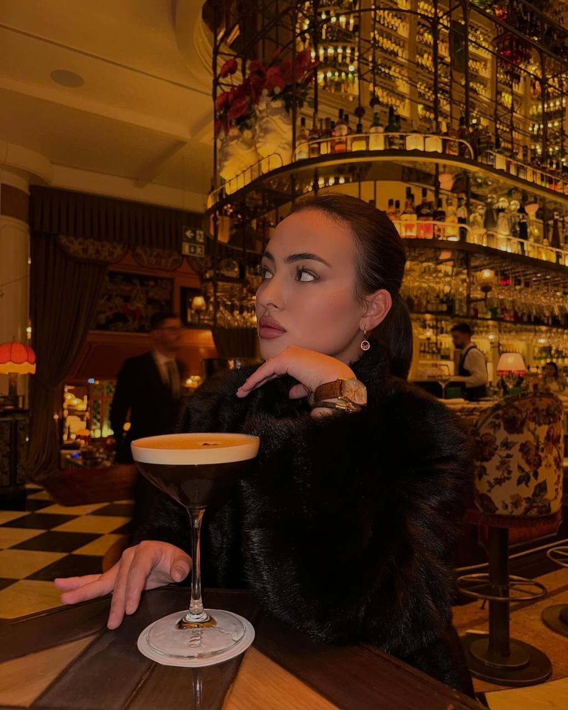
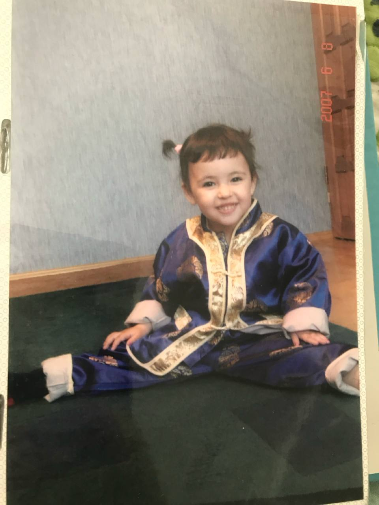
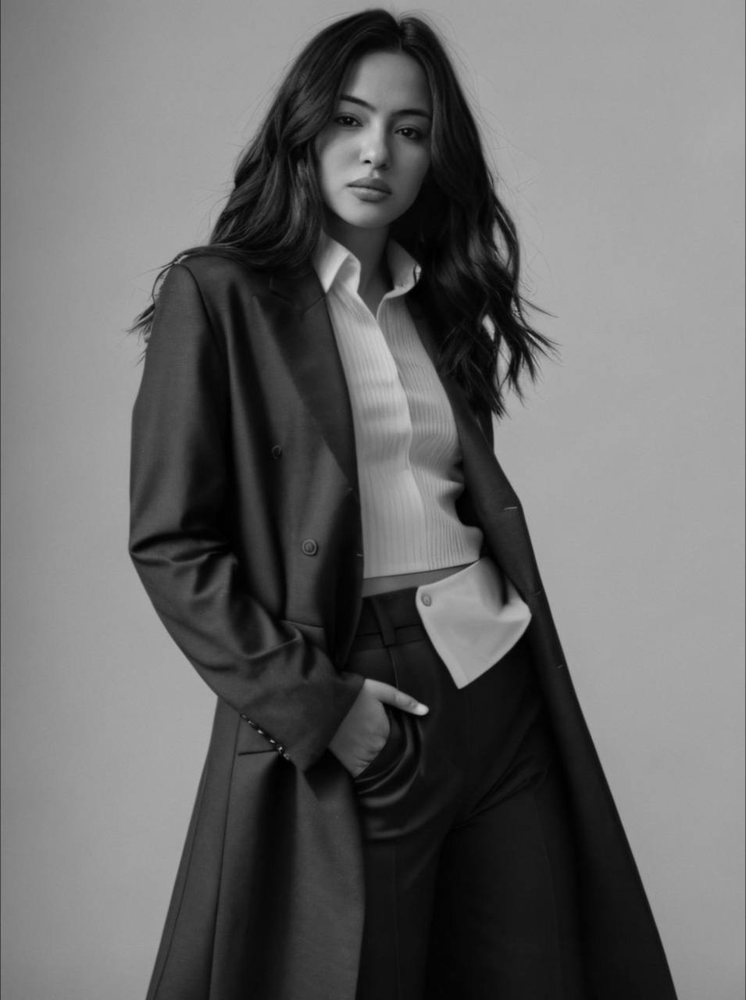

L'enfance de Valeriia MITROFANOVA
A pratiqué le Taekwondo, remportant plusieurs prix en compétition.
S’est impliquée dans les arts folkloriques, participant à diverses performances.
A joué de la guitare et la domra développant ses compétences musicales.
A pratiqué le hip-hop, participant à des événements et des compétitions.
A travaillé comme mannequin, participant à divers défilés et séances photo.
A remporté de nombreux prix lors de spectacles en Chine et en Corée.
A remporté un concours de langue anglaise, ce qui lui a permis de partir étudier à l'étranger.
Son parcours et ses formations
Diplôme de fin d’études secondaires, section humanitaire, mention très bien.
Année d’échange en Belgique (Mouscron) au Collège Saint-Charles Dottignies-Luigne, Mouscron.
Licence en Information et Communication depuis 2022.
Elle est professeure particulière d’anglais en ligne.
Expérience professionnelle
Manager d’équipe. Café “Crêpe Waffle Nice Cream”, Nice.
Interprète de liaison en français et en anglais vers le russe lors de réunions officielles dans des hôpitaux, des banques.
Bénévole au Fonds Caritatif Public Interrégional "Interculture" et représentante officielle de la programme AFS.
Responsable des relations publiques. Stage de fin d’études Restaurant “Republic”, Vladivostok, Russie.
Professeure particulière d’anglais en ligne.